Cocolevio - Technology Company Website
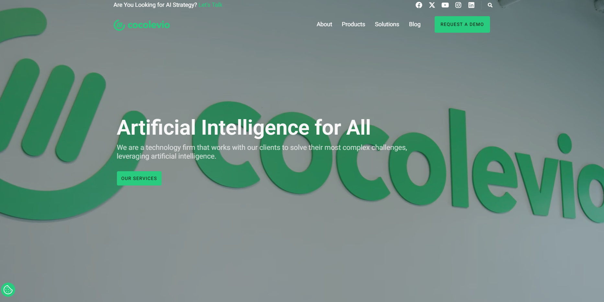 Developed and maintained a modern, professional WordPress website for Cocolevio, a leading technology company specializing in AI strategy, advanced technology solutions, and software development. The website features a clean, modern design with a dark theme and vibrant green accents.
The platform includes comprehensive sections for services, products (including CocolevioHR), solutions, blog, and client stories. Built on WordPress with custom development, the site showcases the company's expertise in artificial intelligence, machine learning, big data, cloud services, and IoT solutions. The responsive design ensures optimal user experience across all devices.
Technology: WordPress, Custom Development, Responsive Design | Client: Cocolevio | Status: Live
EatFiller - Food Ordering Mobile Application
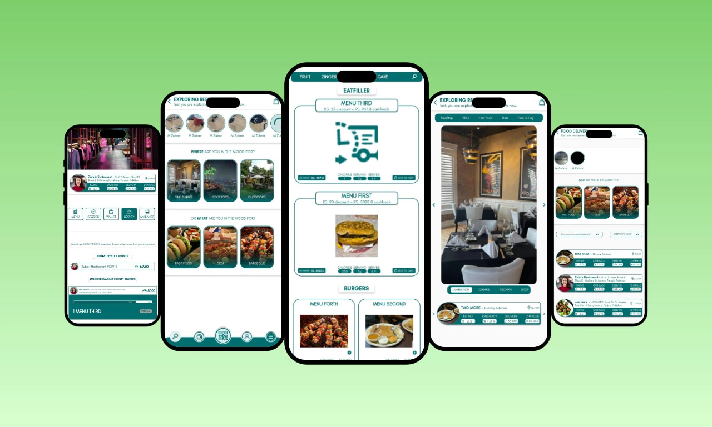 Developed a comprehensive food ordering and restaurant discovery mobile application for iOS and Android platforms. The app features restaurant exploration, menu browsing, loyalty points system, wallet integration, and seamless food delivery ordering.
The application includes features such as restaurant discovery by mood (Fine Dining, Rooftops, Outdoors, Fast Food, Desi, Barbeque), real-time menu browsing with cashback offers, loyalty program management, and integrated payment processing. The app provides users with a complete food ordering experience from discovery to delivery, with support for multiple cuisines and restaurant types.
Technology: React Native, Node.js, MongoDB | Client: EatFiller | Completed: January 2026
NOVANT Healthcare - WordPress Website
Designed and developed a comprehensive healthcare website for NOVANT, a leading medical service provider. The website features patient portals, doctor finder, appointment scheduling, emergency care information, and detailed service offerings across multiple medical specialties.
The platform includes sections for primary care, emergency care, urgent care, and specialty care services. Key features include online appointment requests, patient portal access, bill payment integration, mobile app promotion, and comprehensive information about centers of excellence including Cancer, Heart, Surgery, Radiology, Neurology, and Orthopedics. The responsive design ensures accessibility across all devices for patients seeking healthcare information and services.
Technology: WordPress, Custom Theme Development, Responsive Design | Client: NOVANT Healthcare | Status: Live
9to Done - Shopify E-commerce Store
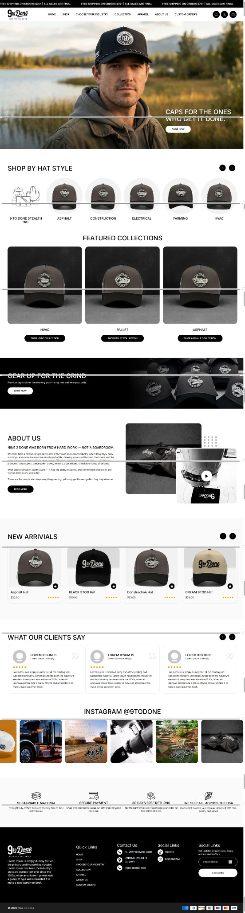 Built and customized a complete Shopify e-commerce store for 9to Done, a premium hat brand targeting hardworking professionals. The store features product collections, custom order functionality, industry-specific categories, and a modern, professional design that reflects the brand's "Born for the Grind" ethos.
The e-commerce platform includes features such as shop by hat style, featured collections, new arrivals section, customer testimonials, Instagram integration, and comprehensive product management. The store supports multiple payment methods, secure checkout, 30-day returns policy, and sustainable shipping options. The design emphasizes the brand's connection to various industries including Construction, Electrical, Farming, HVAC, and Asphalt.
Technology: Shopify, Liquid Templates, Custom Development | Client: 9to Done | Status: Live
Swapin - Crypto Payment Platform
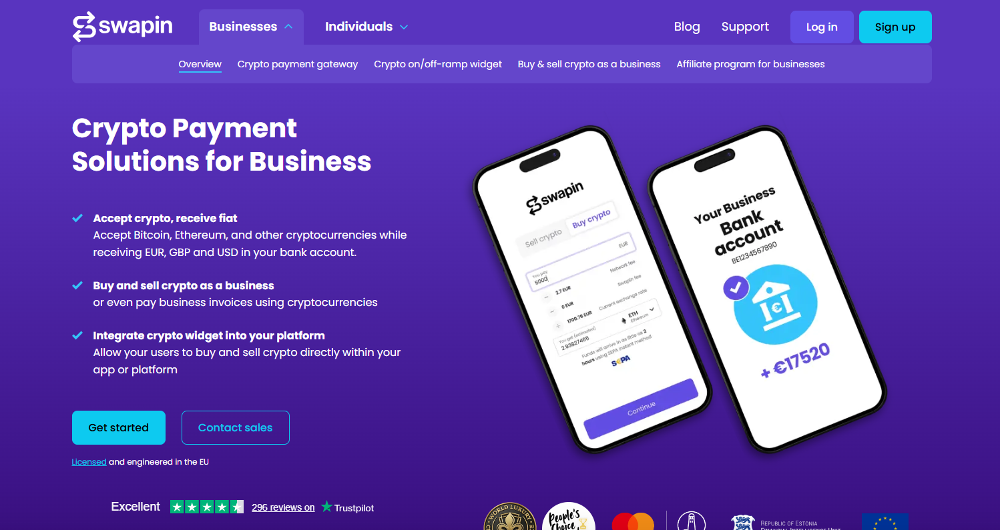 Developed Swapin, a comprehensive crypto payment solutions platform for businesses. The platform enables businesses to accept cryptocurrencies (Bitcoin, Ethereum, and others) while receiving fiat currencies (EUR, GBP, USD) directly in their bank accounts. The solution includes crypto payment gateway, on/off-ramp widgets, and business crypto trading capabilities.
The platform features seamless integration with business bank accounts, allowing companies to buy and sell crypto, pay business invoices using cryptocurrencies, and integrate crypto widgets into their own platforms. Licensed and engineered in the EU, Swapin provides secure, compliant crypto payment processing with support for multiple payment methods including SEPA instant transfers. The solution includes mobile apps for both iOS and Android platforms.
Technology: React, Node.js, Blockchain Integration | Client: Swapin | Status: Live
DIGIBLOX - Multi-Currency Banking System
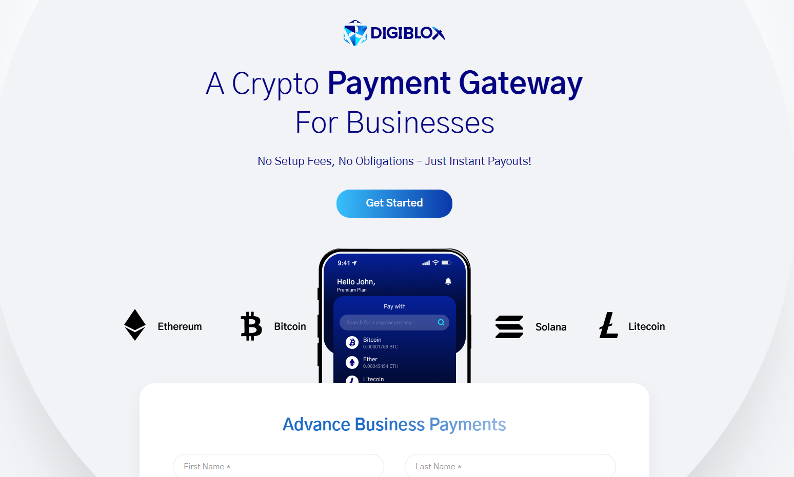 Developed DIGIBLOX, a crypto payment gateway for businesses that enables multi-currency transactions. The platform allows businesses to accept payments in multiple cryptocurrencies including Bitcoin, Ethereum, Litecoin, and Solana, while providing instant payouts and seamless currency management.
The solution features no setup fees, no obligations, and instant payouts for businesses. The platform includes advanced business payment capabilities with support for multiple digital currencies, real-time balance tracking, and secure transaction processing. The mobile application interface provides businesses with easy access to manage their crypto payments and view balances across different cryptocurrencies.
Technology: React, Node.js, Blockchain Integration | Client: DIGIBLOX | Status: Live
Event Ticketing Platform
 Built a scalable event management and ticketing platform that handles millions of ticket sales annually. The system includes real-time inventory management, QR code validation, mobile app integration, and comprehensive analytics for event organizers.
Built a scalable event management and ticketing platform that handles millions of ticket sales annually. The system includes real-time inventory management, QR code validation, mobile app integration, and comprehensive analytics for event organizers.
The platform features dynamic pricing, seat selection, and integration with payment processors. It supports multiple event types from concerts to conferences, with features like waitlists, group bookings, and automated refunds. The solution has processed over 5 million tickets since launch.
Technology: Python, Django, React Native | Client: EventPro Solutions | Completed: October 2025
MES (Manufacturing Execution System)
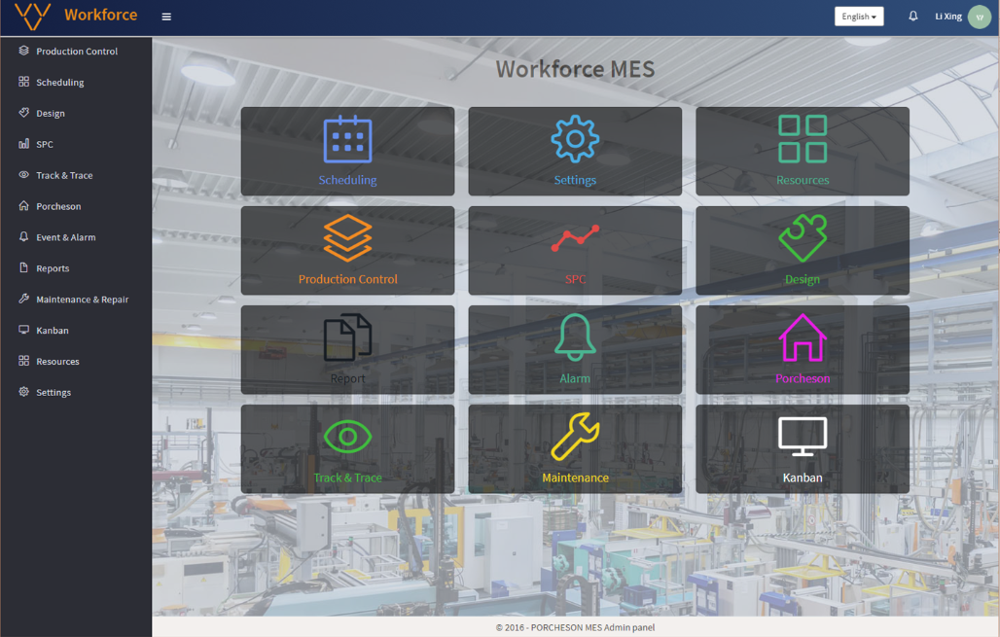 Developed a comprehensive Manufacturing Execution System (MES) that connects, monitors, and controls complex manufacturing systems and data flows on the factory floor. The system ensures effective execution of manufacturing operations and improves production output through real-time monitoring and control.
The MES provides complete visibility into production processes, tracks work orders, manages inventory, monitors equipment performance, and generates comprehensive reports. The system integrates seamlessly with existing ERP systems and provides real-time data analytics to optimize manufacturing efficiency, reduce downtime, and ensure quality compliance across all production stages.
Technology: React.js/Redux, Golang, MongoDB | Client: Manufacturing Client | Status: Completed
ERP (Enterprise Resources Planning)
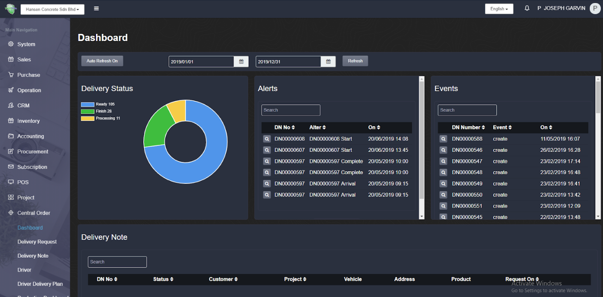 Built a comprehensive Enterprise Resource Planning (ERP) system that allows organizations to use integrated applications to manage business operations and automate back office functions related to technology, services, and human resources.
The ERP system provides modules for finance, accounting, human resources, inventory management, supply chain, customer relationship management, and business intelligence. The platform enables seamless data flow across departments, automates workflows, provides real-time reporting and analytics, and supports multi-company and multi-currency operations. The system helps organizations streamline operations, reduce costs, and make data-driven decisions.
Technology: React.js/Redux, Golang, MongoDB | Client: Enterprise Client | Status: Completed
GreenBay - Payment System based on Blockchain
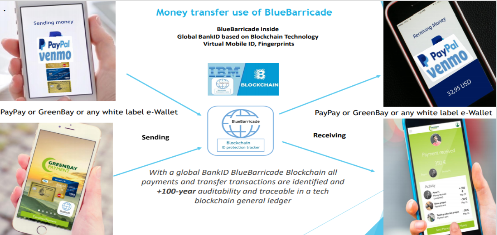 Developed GreenBay P&DT, a Blockchain-based International cross border "Swish" eWallet App and GSM e-commerce product. The platform aims to be one of three leading overseas payment and money transfers service e-commerce companies for Transfers for Remittance and Donations.
The system consists of e-wallet API services based on blockchain technology, including test front ends for Proof of Concept. The platform enables secure cross-border payments, remittances, and donations using blockchain technology. The solution provides fast, secure, and cost-effective international money transfers with transparent transaction tracking and compliance with international financial regulations.
Technology: Node.js, Golang, Erlang, DB2, IBM Hyperledger Fabric, Smart Contract, Microservice, React.js/Redux, Vue.JS | Client: GreenBay P&DT | Status: Completed
Multi-vendor Market Place - eCommerce
Built a next-generation marketplace platform that combines the best innovative solutions for marketplaces. The platform is owned by a marketplace operator who profits from every transaction processed, providing a comprehensive e-commerce solution for multiple vendors.
The marketplace features vendor management, product catalog management, order processing, payment gateway integration, commission management, and comprehensive analytics. The platform supports multiple vendors selling various products, with features like vendor dashboards, inventory management, order tracking, review and rating systems, and secure payment processing. The system ensures seamless transactions between buyers and sellers while providing the marketplace operator with complete control and revenue management.
Technology: React.js/Redux-saga, Golang | Client: Marketplace Client | Status: Completed
Novo Watch - Shopify eCommerce
Developed a single vendor e-commerce project focused on watch products. The platform provides a comprehensive online store for premium watches with custom Shopify theme development and plugin integration.
The e-commerce platform includes product catalog management, shopping cart functionality, secure checkout, payment processing, order management, customer accounts, and inventory tracking. The store features a modern, elegant design that showcases watch products effectively, with high-quality product images, detailed specifications, and customer reviews. The platform integrates with MongoDB for additional data management and custom functionality.
Technology: Shopify, Shopify Plugin, MongoDB | Client: Novo Watch | Status: Live
The Great Divide - Shopify eCommerce
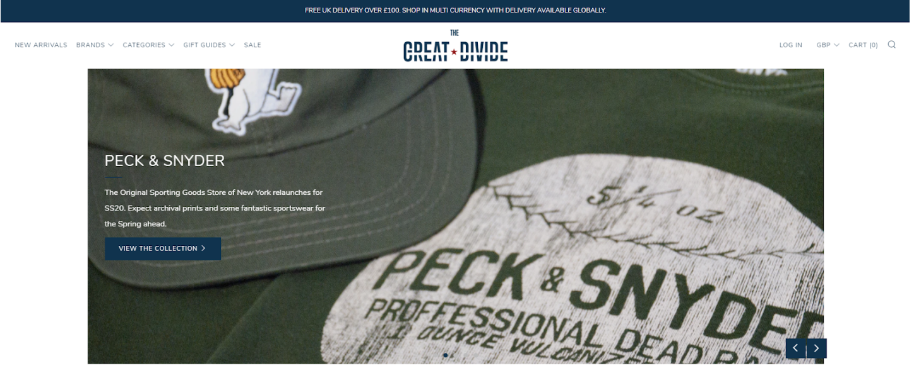 Built a single vendor e-commerce project for a fashion brand selling clothes. The platform provides a complete online shopping experience with custom Shopify development and theme customization.
The e-commerce store features product collections, size guides, lookbook galleries, customer reviews, wishlist functionality, and seamless checkout process. The platform includes custom Shopify plugins for enhanced functionality, integrates with MongoDB for data management, and provides a modern, fashion-forward design that reflects the brand's identity. The store supports multiple payment methods and shipping options for customers worldwide.
Technology: Shopify, Shopify Plugin, MongoDB | Client: The Great Divide | Status: Live
Employee Management System
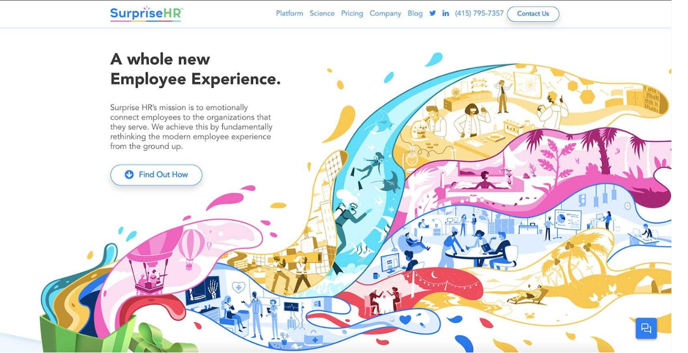 Developed an Employee Management System designed to simplify the process of record maintenance of employees in an organization. The system helps manage employee information for HR functions and is part of a comprehensive Human Resource Management System.
The platform includes employee profiles, attendance tracking, leave management, payroll processing, performance reviews, document management, and reporting features. The system provides HR departments with tools to efficiently manage employee data, track attendance and leave, process payroll, conduct performance evaluations, and generate comprehensive reports. The platform streamlines HR operations and improves organizational efficiency.
Technology: Ruby on Rails, HAML, PostgreSQL | Client: SurpriseHR | Status: Live
Frink - Decentralized Digital Currency
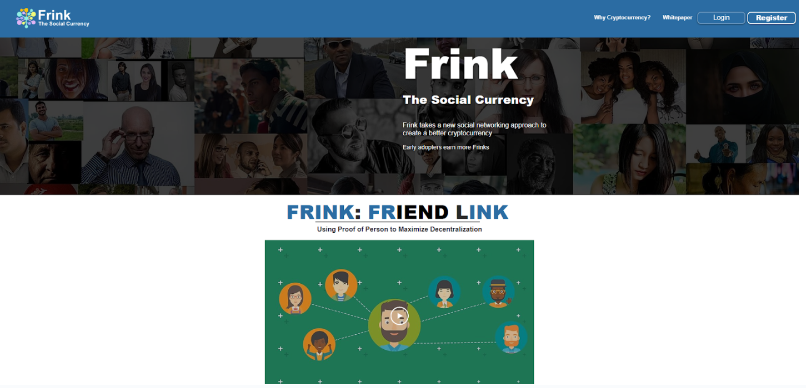 Developed Frink, a peer-to-peer digital currency that builds connections to link users into a decentralized social network. The platform analyzes these connections to verify fully decentralized private user IDs securing money transactions.
Frink is building the first completely decentralized currency that allows every user to equally mine a Proof-of-Person blockchain, giving equal say and equal pay. The platform combines blockchain technology with social networking features, creating a unique decentralized financial ecosystem. The system ensures security through decentralized verification and provides equal opportunities for all users to participate in the blockchain network.
Technology: Wix, HTML/SCSS/CSS, Blockchain, Rust | Client: Frink | Status: Completed
Stay Hired - Job Platform
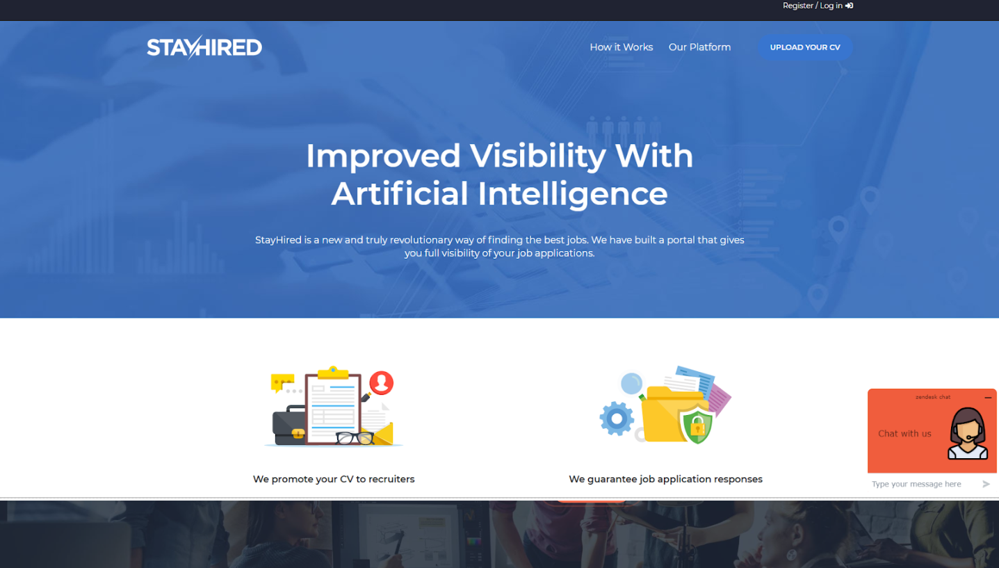 Developed Stay Hired, a platform that provides recruiters and job seekers with tools to post jobs and find relevant developers. The platform uses machine learning to match candidates with opportunities effectively.
The platform includes separate portals for candidates and recruiters, job posting and search functionality, candidate profile management, application tracking, and intelligent matching algorithms. The system uses machine learning to analyze job requirements and candidate profiles, providing better matches and improving the hiring process. The platform streamlines recruitment workflows and helps both recruiters and job seekers find the right fit.
Technology: Angular7, MySQL, Laravel, Machine Learning | Client: Stay Hired | Status: Live
AU Assist - Car Repair Booking System
Developed AU Assist, a CMS for car repair booking system that allows customers to book appointments, track services, and manage their vehicle maintenance needs.
The platform includes appointment scheduling, service history tracking, customer accounts, notification system via OneSignal, and mobile app support through React Native. The system is deployed on AWS for scalability and reliability. The platform helps car repair shops manage bookings efficiently while providing customers with an easy way to schedule and track their vehicle services.
Technology: Angular5, MySQL, Node.js, AWS, Onesignal, React Native | Client: AU Assist | Status: Live
Food Care - Restaurant CRM
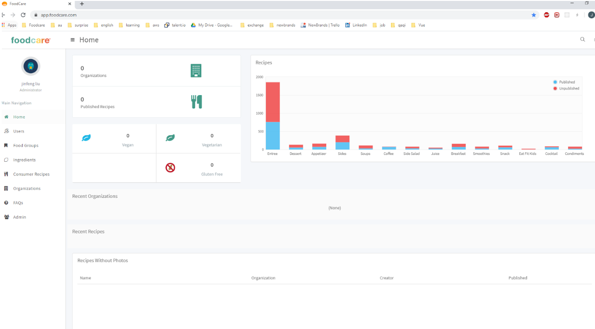 Developed Foodcare, a CRM system to manage restaurants, recipes, and foods. This project was developed under TDD (Test Driven Development) methodology and architected for DevOps using Heroku, CircleCI, and HoneyBadger.
The platform includes restaurant management, recipe management, food inventory tracking, menu planning, and comprehensive reporting features. The system helps restaurant owners manage their operations efficiently, track ingredients, plan menus, and maintain recipe databases. The DevOps architecture ensures reliable deployment, continuous integration, and error monitoring for optimal system performance.
Technology: Ruby on Rails, PostgreSQL | Client: Food Care | Status: Live
Content Management System
Developed a comprehensive Content Management System (CMS) application used to manage web content, allowing multiple contributors to create, edit, and publish content. Content in the CMS is stored in a database and displayed in a presentation layer based on a set of templates.
The CMS provides a user-friendly interface for content creation and editing, role-based access control, workflow management, version control, and template customization. The system enables organizations to efficiently manage their web content with multiple contributors working collaboratively. The platform supports various content types and provides flexible publishing options.
Technology: Angular, Node.js, MongoDB | Client: CMS Law | Status: Live
FTI Flight Booking System
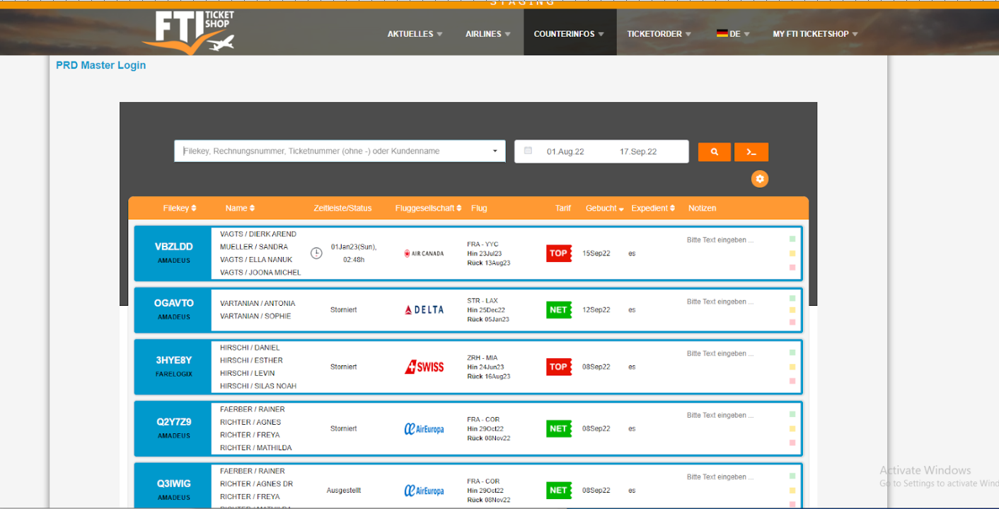 Developed FTI, an advanced online flight booking software that combines back office, online booking (B2C), and partner booking (B2B) functionality. It is a cloud-based software accessible anytime from anywhere.
The platform includes comprehensive flight search and booking capabilities, payment processing, booking management, customer accounts, and partner portal for B2B bookings. The system provides real-time flight availability, pricing, and booking confirmation. The cloud-based architecture ensures high availability and scalability, while the back office system allows administrators to manage bookings, customers, and partners efficiently.
Technology: Vue.js, Golang, MySQL | Client: FTI | Status: Live
Room-Res Hotel Booking Platform
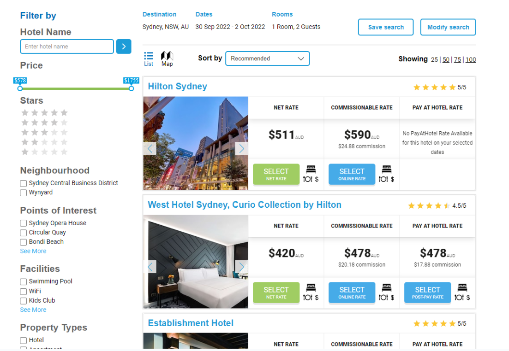 Developed Room-Res.com, a platform made exclusively for travel agents that helps users make hotel bookings comparing the best net rates and commissionable rates available. A Hotel Booking System that processes secure online reservations made through the platform.
The platform includes hotel search and comparison, booking management, rate comparison (net rates vs commissionable rates), email marketing integration, and backend system for hotels to manage bookings. The data is passed onto a Backend System, which can be accessed by hotels to manage bookings. The platform provides travel agents with tools to find the best hotel rates and manage bookings efficiently.
Technology: React.js, Golang, PostgreSQL, Email Marketing | Client: Room-Res | Status: Live
Cimpatico - Live-Stream Talk Shows
Developed Cimpatico, a system that produces live-stream talk shows about complex social and business sector challenges and the people working on them. The platform enables real-time streaming and engagement with audiences.
The platform includes live streaming capabilities, video on-demand, user accounts, content search using Algolia, and interactive features for audience engagement. The system allows hosts to create and broadcast live talk shows, while viewers can watch live or access recorded content. The platform provides a comprehensive solution for producing and distributing live-stream content about social and business challenges.
Technology: Angular5.x, 6.x, Firebase, Algolia | Client: Cimpatico | Status: Live
Find a Cargo - Cargo Tracking Platform
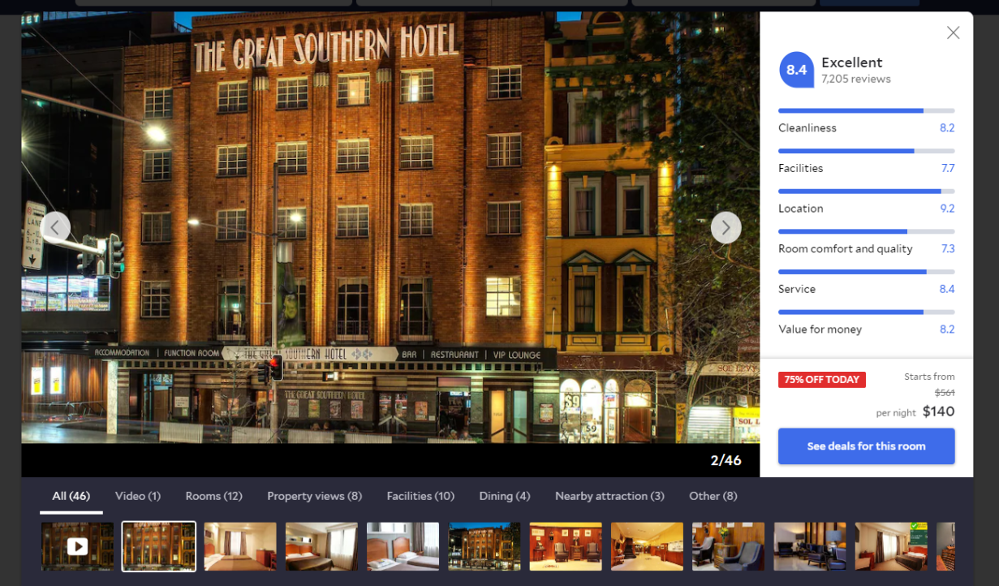 Developed Find a Cargo, a web/app platform that finds cargo locations using Google Maps. The platform provides comprehensive cargo tracking and delivery management solutions.
The platform includes cargo search functionality, real-time tracking using Google Maps, delivery management, label generation, rating system, and multiple access points for different user types. The system helps users locate cargo, track deliveries, generate shipping labels, and rate delivery services. The platform integrates seamlessly with Google Maps for accurate location tracking and route optimization.
Technology: Angular, Node.js, MongoDB | Client: Find a Cargo | Status: Live
Smart Karrot - Profile Platform
 Developed Smart Karrot, a web platform for creating and managing profiles. The platform provides comprehensive profile management and related functionality.
Developed Smart Karrot, a web platform for creating and managing profiles. The platform provides comprehensive profile management and related functionality.
The platform includes user profile creation and management, profile customization, data storage using Dynamic DB, and various profile-related features. The system enables users to create detailed profiles, customize their information, and manage their data efficiently. The platform provides a user-friendly interface for profile management with dynamic database integration for flexible data storage.
Technology: Dynamic DB, Angular 6 | Client: Smart Karrot | Status: Live
MetaverseMe Marketplace - NFT & Digital Fashion Platform
Developed MetaverseME, a platform and marketplace for exploring and sharing your digital self through NFTs, fashion, AR, games, dance, and music. MetaverseME brings your avatar (your ME!) into the Metaverse, where you can explore, communicate, create videos, collect rare fashion items, and much more.
The platform includes NFT marketplace functionality, avatar creation and customization, AR integration, gaming features, social interaction tools, and digital fashion collections. The system enables users to create digital identities, purchase and trade NFTs, customize avatars, participate in virtual experiences, and interact with other users in the metaverse. The platform combines blockchain technology with immersive digital experiences.
Technology: Solidity, Rust, Web3.js, Ether.js, React.js, Strapi, Unity, PostgreSQL | Client: MetaverseME | Status: Completed
Reblika-Reblium Metaverse - Digital Identity Platform
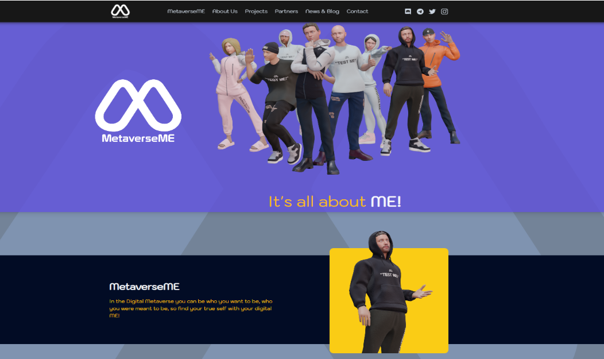 Developed Reblium, a platform that strives to offer high-quality tools to create your digital identity and enable you to move around freely in the metaverse, providing the finest experiences within Metaverse & NFT ecosystems.
The platform includes digital identity creation tools, metaverse navigation, NFT marketplace integration, IPFS storage, and immersive 3D experiences using Unreal Engine 5. The system enables users to create unique digital identities, explore virtual worlds, trade NFTs, and interact with other users in the metaverse. The platform leverages cutting-edge technologies including blockchain, IPFS, and advanced 3D rendering for immersive experiences.
Technology: Unreal 5, Furioos, Moralis, Web3.js, Solidity, IPFS, React, Metaplex, SPL, NFT.storage | Client: Reblika-Reblium | Status: Completed
Aggregator - Unified AI-Powered Content Generation Platform
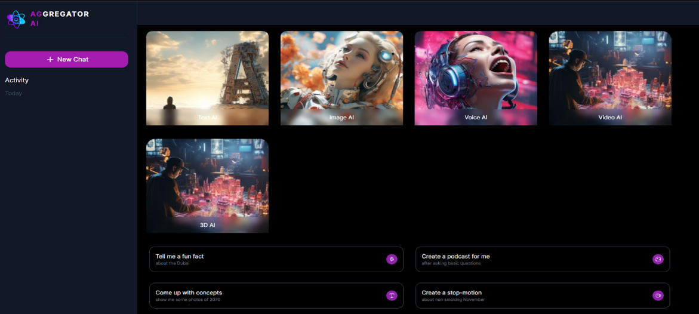 Developed a unified AI-powered platform that generates text, images, videos, voice, and 3D models from simple user inputs. The system integrates multiple generative models into a single workflow, enabling fast, high-quality content creation across different formats.
Built with a scalable architecture, the platform supports real-time generation, asset management, and seamless model expansion. The system is designed for creators, developers, and businesses looking to produce multimodal content efficiently from one interface. The platform includes text generation using LLMs, image generation with diffusion models, video creation, TTS/STT for voice generation, and 3D asset generation capabilities.
Technology: Multimodal AI Pipelines, LLMs, Diffusion Models, TTS/STT, Video Generation, 3D Asset Generation, Python, FastAPI, GPU Inference, Cloud Deployment | Client: Aggregator | Status: Completed
Gazprompt - Image & Text Generator
Developed Gazprompt, an AI-powered platform for generating images and text content. The platform provides users with tools to create high-quality visual and textual content using advanced AI models.
The platform includes image generation capabilities, text generation features, prompt engineering tools, and content management. The system enables users to create custom images and text content quickly and efficiently, making it ideal for content creators, marketers, and businesses looking to generate visual and textual assets.
Technology: AI/ML, Image Generation, Text Generation | Client: Gazprompt | Status: Completed
TaskADE - AI Code Generator
Developed TaskADE, an AI-powered code generation tool that helps developers create code quickly and efficiently. The platform uses advanced AI models to generate code based on user requirements.
The platform includes code generation for multiple programming languages, code completion, syntax checking, and code optimization suggestions. The system enables developers to generate HTML, CSS, JavaScript, and other code formats quickly, reducing development time and improving productivity. The platform is particularly useful for rapid prototyping and code generation tasks.
Technology: AI/ML, Code Generation, Natural Language Processing | Client: TaskADE | Status: Live
Swing - AI Tennis Ball Tracking System
Developed Swing, an AI-powered tennis ball tracking system that uses computer vision and machine learning to track tennis balls during play. The system provides real-time analysis and insights for tennis players.
The platform includes ball tracking using computer vision, trajectory analysis, performance metrics, and video analysis capabilities. The system helps tennis players analyze their game, track ball movement, and improve their performance through data-driven insights. The AI-powered tracking provides accurate ball position data and movement patterns.
Technology: AI/ML, Computer Vision, Video Processing | Client: Swing | Status: Live
Sharly - Smart Document Summarize Tool
Developed Sharly, a smart document summarization tool that uses AI to analyze and summarize documents quickly and accurately. The platform helps users understand long documents through intelligent summarization.
The platform includes document upload and processing, AI-powered summarization, key point extraction, and summary customization. The system enables users to quickly understand lengthy documents by generating concise summaries that capture the most important information. The tool is particularly useful for researchers, students, and professionals who need to process large amounts of text efficiently.
Technology: AI/ML, Natural Language Processing, Document Processing | Client: Sharly | Status: Live
NoteBookingNorge - Meeting Booking System
Developed NoteBookingNorge, a comprehensive meeting booking system that allows users to schedule and manage meetings efficiently. The platform provides tools for booking meeting rooms and coordinating schedules.
The platform includes meeting room booking, calendar integration, availability checking, notification system, and booking management. The system enables users to find available meeting rooms, book time slots, receive confirmations, and manage their bookings. The platform streamlines the meeting booking process and helps organizations optimize their meeting room usage.
Technology: Web Development, Booking System, Calendar Integration | Client: NoteBookingNorge | Status: Live
Ocada AI - Token Trading Audit System
Developed Ocada AI, a token trading audit system that uses artificial intelligence to analyze and audit cryptocurrency token trading activities. The platform provides comprehensive trading analysis and compliance checking.
The platform includes trading activity analysis, transaction auditing, compliance checking, risk assessment, and reporting features. The system helps cryptocurrency exchanges and traders analyze trading patterns, detect anomalies, ensure compliance with regulations, and assess trading risks. The AI-powered audit system provides accurate and comprehensive analysis of token trading activities.
Technology: AI/ML, Blockchain, Trading Analysis, Compliance | Client: Ocada AI | Status: Live